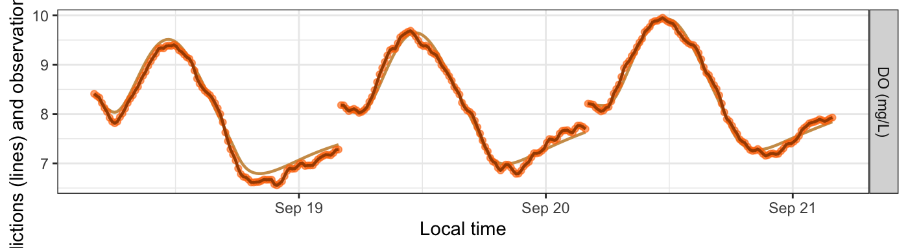
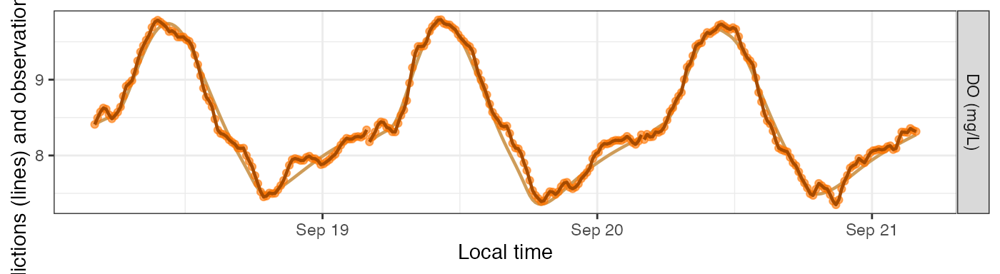
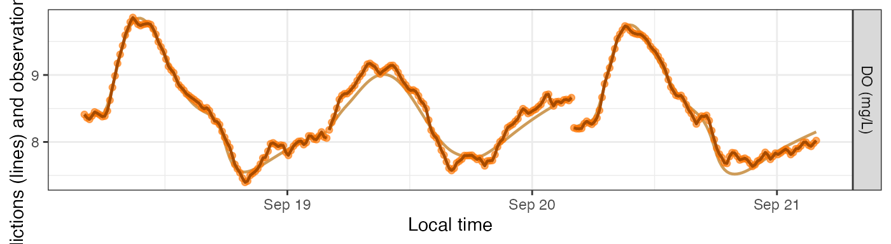
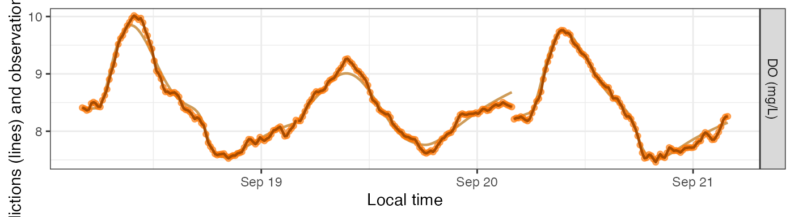
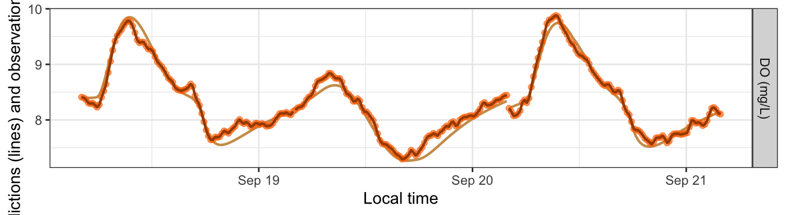
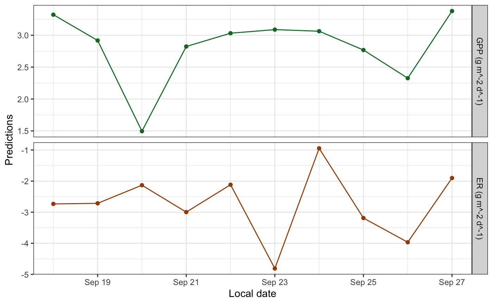
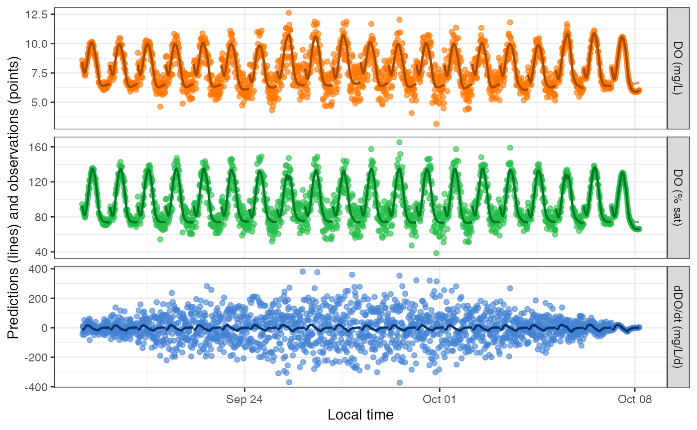
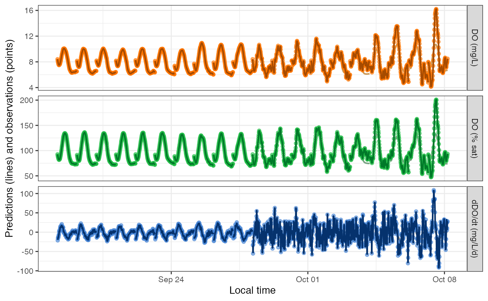
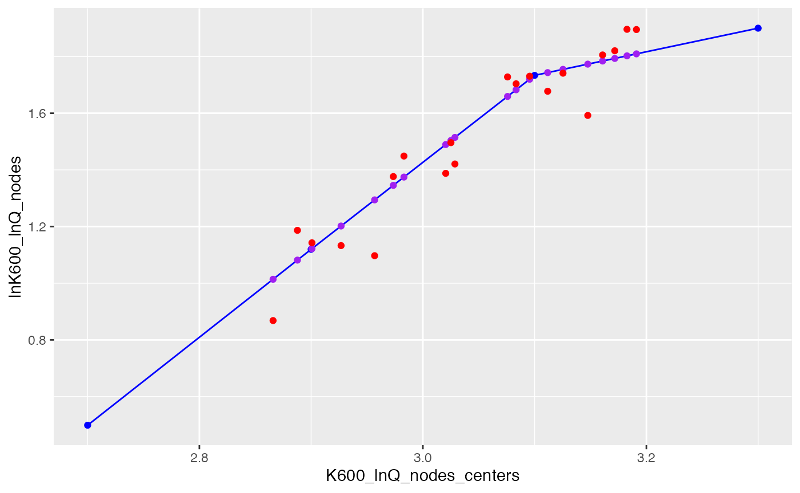

Overview
This vignette shows how to simulate dissolved oxygen ‘observations’ for the purpose of exploring and testing metabolism models.
Setup
Load streamMetabolizer and some helper packages.
Get some data to work with: here we’re requesting three days of data at 15-minute resolution. Thanks to Bob Hall for the test data.
dat <- data_metab('3', '15')
Creating a Sim Model
To create a simulation model, you should
- Choose a model structure
- Choose daily metabolism parameters
- Choose the other model specifications
- Create the model
- Generate predictions (simulations) from the model
1. Choosing the model structure
You can simulate data using any of the GPP and ER functions available to MLE models. Simulations are done by models of type 'sim' but otherwise take very similar arguments to those of an MLE model. Here we’ll use a model where ER is a function of temperature.
name_sim_q10 <- mm_name('sim', ER_fun='q10temp')
2. Choosing the daily parameters
To simulate data, you need to specify the daily parameters beforehand. The model structure determines which parameters are needed. There are three good ways to learn which daily parameters you need to specify.
A. Trial and error
To learn about parameter needs by trial and error, simply create the model with the equations you want but without daily inputs, ask for the parameters, and read the error message to get a list of parameters. It’s fine to use the defaults for the specifications for now.
mm_sim_q10_trial <- metab(specs(name_sim_q10), dat) get_params(mm_sim_q10_trial)
## date K600.daily GPP.daily ER20 err.obs.sigma err.obs.phi err.proc.sigma err.proc.phi
## 1 2012-09-18 0.000000 10.308417 -6.743479 0.01 0 0.2 0
## 2 2012-09-19 4.374739 7.071715 -7.709710 0.01 0 0.2 0
## 3 2012-09-20 3.158206 4.629381 -2.748831 0.01 0 0.2 0
## discharge.daily
## 1 20.53472
## 2 22.10566
## 3 21.10136Great: we need GPP.daily, ER20, and K600.daily. Now we can pick values for those parameters and put them in a data.frame.
params_sim_q10a <- data.frame(date=as.Date(paste0('2012-09-',18:20)), GPP.daily=2.1, ER20=-5:-3, K600.daily=16) params_sim_q10a
## date GPP.daily ER20 K600.daily
## 1 2012-09-18 2.1 -5 16
## 2 2012-09-19 2.1 -4 16
## 3 2012-09-20 2.1 -3 16B. Generate parameters from another model
You can also use fitted parameters from another model as your input for a simulation model. This method could be useful for identifying realistic parameters and/or exploring why a model fitting process didn’t work so well.
First fit an MLE model to the same data using the GPP_fun and ER_fun you want. It’s fine (again) to use the defaults for the specifications.
Then ask for the parameters in the right format (without columns for uncertainty or messages).
params_sim_q10b <- get_params(mm_mle_q10, uncertainty='none', messages=FALSE) params_sim_q10b
## date GPP.daily ER20 K600.daily
## 1 2012-09-18 2.051333 -2.696135 22.36965
## 2 2012-09-19 2.436224 -3.147503 24.27164
## 3 2012-09-20 2.090918 -2.370546 22.842533. Choosing the specifications
After choosing parameters, the next step is to choose the rest of the specifications. The main difference between sim models and other models is that you can choose values for the probability distributions of the observation and/or process errors. See ?specs for details on the distribution parameters err_obs_sigma, err_obs_phi, err_proc_sigma, and err_proc_phi.
specs_sim_q10 <- specs(name_sim_q10, err_obs_sigma=0, err_proc_sigma=1, K600_daily=NULL, GPP_daily=NULL, ER20=NULL) specs_sim_q10
## Model specifications:
## model_name s_np_oipcpi_tr_plrqkm.rnorm
## day_start 4
## day_end 28
## day_tests full_day, even_timesteps, complete_data, pos_discharge, pos_depth
## required_timestep NA
## discharge_daily function; see element [['discharge_daily']] for details
## DO_mod_1 NULL
## K600_daily NULL
## GPP_daily NULL
## ER20 NULL
## err_obs_sigma 0
## err_obs_phi 0
## err_proc_sigma 1
## err_proc_phi 0
## err_round NA
## sim_seed NA4. Creating a model
Now you can create a simulation model much as you would an MLE or Bayesian model. We’ll make two models here, one for each of the parameter sets we created above.
5. Generating predictions
Predictions and simulations are one and the same when your model is of type sim. The output of predict_DO for sim models includes three DO concentration columns. DO.pure is what the DO concentrations would be if the GPP, ER, and K600 parameters exactly described what occurred in the stream. If there’s process error in your model, DO.mod will differ from DO.pure in that DO.mod also contains the process error as a fourth driver (on top of GPP, ER, and reaeration) of in-situ DO concentrations. (DO.mod and DO.pure are identical if there’s no process error.) Lastly, DO.obs is a simulation of what your sensor might record; it includes everything in DO.mod plus observation error representing inaccuracies in how the sensor reads or records the DO concentration. These three variables are plotted as a muted-color line (DO.pure), a bold dark line (DO.mod), and brightly colored points (DO.obs). DO.pure is mostly hidden behind the others unless the errors are large.
head(predict_DO(mm_sim_q10a))
## date solar.time DO.sat depth temp.water light DO.pure DO.mod DO.obs
## 1 2012-09-18 2012-09-18 04:05:58 9.083329 0.16 3.60 0 8.410000 8.410000 8.410000
## 2 2012-09-18 2012-09-18 04:20:58 9.093063 0.16 3.56 0 8.333532 8.340954 8.340954
## 3 2012-09-18 2012-09-18 04:35:58 9.105254 0.16 3.51 0 8.266667 8.260215 8.260215
## 4 2012-09-18 2012-09-18 04:50:58 9.112582 0.16 3.48 0 8.208204 8.191159 8.191159
## 5 2012-09-18 2012-09-18 05:05:58 9.127267 0.16 3.42 0 8.157374 8.133141 8.133141
## 6 2012-09-18 2012-09-18 05:20:58 9.137079 0.16 3.38 0 8.113493 8.182157 8.182157head(predict_DO(mm_sim_q10b))
## date solar.time DO.sat depth temp.water light DO.pure DO.mod DO.obs
## 1 2012-09-18 2012-09-18 04:05:58 9.083329 0.16 3.60 0 8.410000 8.410000 8.410000
## 2 2012-09-18 2012-09-18 04:20:58 9.093063 0.16 3.56 0 8.431047 8.368484 8.368484
## 3 2012-09-18 2012-09-18 04:35:58 9.105254 0.16 3.51 0 8.450642 8.374584 8.374584
## 4 2012-09-18 2012-09-18 04:50:58 9.112582 0.16 3.48 0 8.468822 8.454220 8.454220
## 5 2012-09-18 2012-09-18 05:05:58 9.127267 0.16 3.42 0 8.485984 8.535226 8.535226
## 6 2012-09-18 2012-09-18 05:20:58 9.137079 0.16 3.38 0 8.502466 8.522762 8.522762plot_DO_preds(mm_sim_q10a, y_var='conc')

plot_DO_preds(mm_sim_q10b, y_var='conc')

Simulating Errors
The main purpose of simulation models is to generate DO ‘observations’ with error, i.e., noise, to see whether other models can recover the underlying parameters despite the noise.
For this section we’ll use a simulation with GPP as a saturating function of light. We’ll use method B from above to choose our daily parameters.
specs_sim_sat <- specs(mm_name('sim', GPP_fun='satlight'), err_obs_sigma=0, err_proc_sigma=1, K600_daily=NULL, Pmax=NULL, alpha=NULL, ER_daily=NULL) params_sim_sat <- get_params(metab(specs(mm_name('mle', GPP_fun='satlight')), data=dat), uncertainty='none', messages=FALSE)
Innovative errors
By default, simulations generate new noise each time you request predictions.
mm_sim_sat_i <- metab(specs_sim_sat, dat, data_daily=params_sim_sat) plot_DO_preds(mm_sim_sat_i, y_var='conc')

plot_DO_preds(mm_sim_sat_i, y_var='conc')

Fixed errors
Alternatively, you can revise the value of sim_seed to be a number (any number) and then the simulation produces the same noise each time.
mm_sim_sat_f <- metab(revise(specs_sim_sat, sim_seed=47), dat, data_daily=params_sim_sat) plot_DO_preds(mm_sim_sat_f, y_var='conc')

plot_DO_preds(mm_sim_sat_f, y_var='conc')

Inspecting Models
We’ll use a slightly longer dataset here to demonstrate the potential for random noise at the levels of both the observations (every time you run predict_DO()) and the daily parameters (every time you define data_daily).
dat <- data_metab('10', '30') params <- data.frame(date=as.Date(paste0('2012-09-',18:27)), Pmax=rnorm(10, 6, 2), alpha=rnorm(10, 0.01, 0.001), ER20=rnorm(10, -4, 2), K600.daily=16) specs <- specs(mm_name('sim', GPP_fun='satlight', ER_fun='q10temp'), err_obs_sigma=0.2, err_proc_sigma=1, K600_daily=NULL, Pmax=NULL, alpha=NULL, ER20=NULL) mm <- metab(specs, data=dat, data_daily=params)
Sim models print out their parameters with asterisks to denote that the values are fixed rather than fitted.
mm## metab_model of type metab_sim
## streamMetabolizer version 0.11.4
## Specifications:
## model_name s_np_oipcpi_tr_psrqkm.rnorm
## day_start 4
## day_end 28
## day_tests full_day, even_timesteps, complete_data, pos_discharge, pos_depth
## required_timestep NA
## discharge_daily function; see element [['discharge_daily']] for details
## DO_mod_1 NULL
## K600_daily NULL
## Pmax NULL
## alpha NULL
## ER20 NULL
## err_obs_sigma 0.2
## err_obs_phi 0
## err_proc_sigma 1
## err_proc_phi 0
## err_round NA
## sim_seed NA
## Fitting time: 0.395 secs elapsed
## Parameters (10 dates)(* = fixed value):
## date K600.daily Pmax alpha ER20 err.obs.sigma err.obs.phi err.proc.sigma
## 1 2012-09-18 16* 8.499653* 0.010029735* -4.780125* 0.2 0 1
## 2 2012-09-19 16* 7.007731* 0.010537178* -4.657027* 0.2 0 1
## 3 2012-09-20 16* 3.238979* 0.009774623* -3.654986* 0.2 0 1
## 4 2012-09-21 16* 6.647592* 0.011448446* -5.116775* 0.2 0 1
## 5 2012-09-22 16* 7.267074* 0.011769600* -3.637974* 0.2 0 1
## 6 2012-09-23 16* 7.610239* 0.011205473* -8.047155* 0.2 0 1
## 7 2012-09-24 16* 8.687355* 0.008570020* -1.581533* 0.2 0 1
## 8 2012-09-25 16* 6.872180* 0.010270915* -5.840345* 0.2 0 1
## 9 2012-09-26 16* 5.671489* 0.009372155* -7.103388* 0.2 0 1
## 10 2012-09-27 16* 8.824851* 0.011480065* -3.531540* 0.2 0 1
## err.proc.phi discharge.daily msgs.fit
## 1 0 25.89583 NA
## 2 0 20.04315 NA
## 3 0 21.82759 NA
## 4 0 21.91176 NA
## 5 0 18.48617 NA
## 6 0 20.38645 NA
## 7 0 20.75695 NA
## 8 0 16.51136 NA
## 9 0 21.13763 NA
## 10 0 24.88797 NA
## Predictions (10 dates):
## date GPP GPP.lower GPP.upper ER ER.lower ER.upper msgs.fit msgs.pred
## 1 2012-09-18 3.322718 NA NA -2.733984 NA NA NA
## 2 2012-09-19 2.917873 NA NA -2.714620 NA NA NA
## 3 2012-09-20 1.495126 NA NA -2.132107 NA NA NA
## 4 2012-09-21 2.823602 NA NA -2.997445 NA NA NA
## 5 2012-09-22 3.032138 NA NA -2.116472 NA NA NA
## 6 2012-09-23 3.088538 NA NA -4.810156 NA NA NA
## 7 2012-09-24 3.063456 NA NA -0.946805 NA NA NA
## 8 2012-09-25 2.768727 NA NA -3.188522 NA NA NA
## 9 2012-09-26 2.326526 NA NA -3.966624 NA NA NA
## 10 2012-09-27 3.379752 NA NA -1.901252 NA NA NASim models produce daily estimates of GPP and ER, which should help in choosing simulation parameters. The GPP and ER predictions have no error bars because they’re direct calculations from the daily parameters.
plot_metab_preds(mm)

Multi-Day Simulations
You can also use sim models to simulate variation across many days. Let’s start by generating a 60-day timeseries of water temperature, DO.sat, etc. by concatenating 6 copies of 10 days of French Creek data:
dat <- data_metab('10','15') datlen <- as.numeric(diff(range(dat$solar.time)) + as.difftime(15, units='mins'), units='days') dat20 <- bind_rows(lapply((0:1)*10, function(add) { mutate(dat, solar.time = solar.time + as.difftime(add, units='days')) }))
You can specify a distribution rather than specific values for GPP, ER, and/or K600 parameters. In fact, this is the default if you don’t specify daily data:
sp <- specs(mm_name('sim')) lapply(unclass(sp)[c('K600_daily','GPP_daily','ER_daily')], function(fun) { list(code=attr(fun, 'srcref'), example_vals=fun(n=10)) })
## $K600_daily
## $K600_daily$code
## NULL
##
## $K600_daily$example_vals
## [1] 12.5024522 0.0000000 4.8451989 0.5348238 6.7500281 10.6580735 1.4204620 0.4049037
## [9] 2.4694137 0.3837481
##
##
## $GPP_daily
## $GPP_daily$code
## NULL
##
## $GPP_daily$example_vals
## [1] 12.241122 9.395002 13.286326 1.943745 1.206015 6.378595 8.748920 3.393543 7.560048
## [10] 9.947605
##
##
## $ER_daily
## $ER_daily$code
## NULL
##
## $ER_daily$example_vals
## [1] -8.448015 -9.021673 -9.340776 -15.462309 -6.086234 -13.448947 -7.446629 -3.923620
## [9] -12.084302 -6.767135These functions get called to generate new values for K600.daily, GPP.daily, and ER.daily each time you call get_params, predict_metab, or predict_DO. (They’ll be the same random values each time if you set sim_seed.)
mm <- metab(sp, dat20, data_daily=NULL) get_params(mm)[c('date','K600.daily','GPP.daily','ER.daily')]
## date K600.daily GPP.daily ER.daily
## 1 2012-09-18 4.9509192 12.4964803 -1.858416
## 2 2012-09-19 0.0000000 6.7947340 -23.074698
## 3 2012-09-20 1.6641648 9.1057261 -4.928126
## 4 2012-09-21 5.9447795 7.2732352 -11.941423
## 5 2012-09-22 3.8865855 1.2357462 -10.075534
## 6 2012-09-23 0.0000000 3.6264152 -20.199708
## 7 2012-09-24 0.9206093 12.7308135 -8.520196
## 8 2012-09-25 4.1265899 0.7572564 -16.790405
## 9 2012-09-26 2.7751776 16.1298148 -6.398512
## 10 2012-09-27 6.3743085 6.3595348 -17.591117
## 11 2012-09-28 6.6862906 3.3550830 -14.177416
## 12 2012-09-29 0.1747271 5.2394415 -12.057072
## 13 2012-09-30 8.8793834 12.4134049 -10.383049
## 14 2012-10-01 5.7252081 5.7414275 -6.028630
## 15 2012-10-02 3.2294089 10.6089040 -12.849466
## 16 2012-10-03 0.0000000 5.8949618 -4.270417
## 17 2012-10-04 2.4001885 8.4492347 -8.868065
## 18 2012-10-05 5.5581282 18.1793339 -6.449496
## 19 2012-10-06 1.0489236 12.8365782 -14.894584
## 20 2012-10-07 7.1661207 0.0000000 -12.902445You can also set err_obs_sigma and other error terms as daily values and/or functions. The defaults are simple numeric values that get replicated to every date, but the values can also be vectors or functions, as with GPP_daily, etc.
sp <- specs('sim', err_obs_sigma=function(n, ...) -0.01*((1:n) - (n/2))^2 + 1, err_proc_sigma=function(n, ...) rnorm(n, 0.1, 0.005), err_proc_phi=seq(0, 1, length.out=20), GPP_daily=3, ER_daily=-4, K600_daily=16) mm <- metab(sp, dat20) get_params(mm)
## date K600.daily GPP.daily ER.daily err.obs.sigma err.obs.phi err.proc.sigma err.proc.phi
## 1 2012-09-18 16 3 -4 0.19 0 0.09009701 0.00000000
## 2 2012-09-19 16 3 -4 0.36 0 0.09955935 0.05263158
## 3 2012-09-20 16 3 -4 0.51 0 0.10354724 0.10526316
## 4 2012-09-21 16 3 -4 0.64 0 0.09365029 0.15789474
## 5 2012-09-22 16 3 -4 0.75 0 0.10384265 0.21052632
## 6 2012-09-23 16 3 -4 0.84 0 0.09561254 0.26315789
## 7 2012-09-24 16 3 -4 0.91 0 0.09223247 0.31578947
## 8 2012-09-25 16 3 -4 0.96 0 0.09399625 0.36842105
## 9 2012-09-26 16 3 -4 0.99 0 0.10420869 0.42105263
## 10 2012-09-27 16 3 -4 1.00 0 0.10533759 0.47368421
## 11 2012-09-28 16 3 -4 0.99 0 0.09571477 0.52631579
## 12 2012-09-29 16 3 -4 0.96 0 0.09376700 0.57894737
## 13 2012-09-30 16 3 -4 0.91 0 0.10634470 0.63157895
## 14 2012-10-01 16 3 -4 0.84 0 0.10967700 0.68421053
## 15 2012-10-02 16 3 -4 0.75 0 0.10128540 0.73684211
## 16 2012-10-03 16 3 -4 0.64 0 0.11084842 0.78947368
## 17 2012-10-04 16 3 -4 0.51 0 0.10387385 0.84210526
## 18 2012-10-05 16 3 -4 0.36 0 0.09401837 0.89473684
## 19 2012-10-06 16 3 -4 0.19 0 0.10819055 0.94736842
## 20 2012-10-07 16 3 -4 0.00 0 0.09444911 1.00000000
## discharge.daily
## 1 17.51652
## 2 18.36511
## 3 17.93304
## 4 19.68298
## 5 19.07910
## 6 18.38514
## 7 18.63257
## 8 24.39997
## 9 18.42082
## 10 18.93744
## 11 26.57372
## 12 22.77661
## 13 21.31650
## 14 14.32896
## 15 22.13948
## 16 20.81158
## 17 21.89975
## 18 20.28285
## 19 21.41285
## 20 17.95510plot_DO_preds(mm)
 The above simulation emphasized day-to-day variation in err_obs_sigma. Here’s a simulation emphasizing variation in err_proc_sigma and err_proc_phi:
sp <- specs('sim', err_obs_sigma=0.01, err_proc_sigma=function(n, ...) rep(c(0.5, 4), each=10), err_proc_phi=rep(seq(0, 0.8, length.out=10), times=2), GPP_daily=3, ER_daily=-4, K600_daily=16) mm <- metab(sp, dat20) get_params(mm)
## date K600.daily GPP.daily ER.daily err.obs.sigma err.obs.phi err.proc.sigma err.proc.phi
## 1 2012-09-18 16 3 -4 0.01 0 0.5 0.00000000
## 2 2012-09-19 16 3 -4 0.01 0 0.5 0.08888889
## 3 2012-09-20 16 3 -4 0.01 0 0.5 0.17777778
## 4 2012-09-21 16 3 -4 0.01 0 0.5 0.26666667
## 5 2012-09-22 16 3 -4 0.01 0 0.5 0.35555556
## 6 2012-09-23 16 3 -4 0.01 0 0.5 0.44444444
## 7 2012-09-24 16 3 -4 0.01 0 0.5 0.53333333
## 8 2012-09-25 16 3 -4 0.01 0 0.5 0.62222222
## 9 2012-09-26 16 3 -4 0.01 0 0.5 0.71111111
## 10 2012-09-27 16 3 -4 0.01 0 0.5 0.80000000
## 11 2012-09-28 16 3 -4 0.01 0 4.0 0.00000000
## 12 2012-09-29 16 3 -4 0.01 0 4.0 0.08888889
## 13 2012-09-30 16 3 -4 0.01 0 4.0 0.17777778
## 14 2012-10-01 16 3 -4 0.01 0 4.0 0.26666667
## 15 2012-10-02 16 3 -4 0.01 0 4.0 0.35555556
## 16 2012-10-03 16 3 -4 0.01 0 4.0 0.44444444
## 17 2012-10-04 16 3 -4 0.01 0 4.0 0.53333333
## 18 2012-10-05 16 3 -4 0.01 0 4.0 0.62222222
## 19 2012-10-06 16 3 -4 0.01 0 4.0 0.71111111
## 20 2012-10-07 16 3 -4 0.01 0 4.0 0.80000000
## discharge.daily
## 1 19.55215
## 2 18.54830
## 3 18.00772
## 4 18.30318
## 5 21.84413
## 6 21.09875
## 7 16.83661
## 8 19.49149
## 9 14.72744
## 10 22.62128
## 11 15.90403
## 12 18.31059
## 13 17.62497
## 14 21.15291
## 15 12.78835
## 16 22.47520
## 17 19.19264
## 18 19.64578
## 19 21.91018
## 20 20.56862plot_DO_preds(mm)
 The daily parameter functions that you assign in specs() can refer to previous daily parameters in the list. For example, ER_daily can be a function of GPP.daily. Values of GPP.daily may have been specified in the GPP.daily column of data_daily or in the GPP_daily argument to specs(); the ER function should refer to it with its period-separated name, GPP.daily.
sp <- specs('sim', err_obs_sigma=0.01, err_proc_sigma=0.4, K600_daily=16, GPP_daily=function(n, ...) round(rnorm(n, 4, 1), 1), ER_daily=function(GPP.daily, ...) GPP.daily*-2) mm <- metab(sp, dat20) get_params(mm)
## date K600.daily GPP.daily ER.daily err.obs.sigma err.obs.phi err.proc.sigma err.proc.phi
## 1 2012-09-18 16 5.1 -10.2 0.01 0 0.4 0
## 2 2012-09-19 16 5.3 -10.6 0.01 0 0.4 0
## 3 2012-09-20 16 3.1 -6.2 0.01 0 0.4 0
## 4 2012-09-21 16 3.3 -6.6 0.01 0 0.4 0
## 5 2012-09-22 16 4.3 -8.6 0.01 0 0.4 0
## 6 2012-09-23 16 4.9 -9.8 0.01 0 0.4 0
## 7 2012-09-24 16 3.9 -7.8 0.01 0 0.4 0
## 8 2012-09-25 16 2.7 -5.4 0.01 0 0.4 0
## 9 2012-09-26 16 4.0 -8.0 0.01 0 0.4 0
## 10 2012-09-27 16 2.8 -5.6 0.01 0 0.4 0
## 11 2012-09-28 16 3.7 -7.4 0.01 0 0.4 0
## 12 2012-09-29 16 5.6 -11.2 0.01 0 0.4 0
## 13 2012-09-30 16 4.5 -9.0 0.01 0 0.4 0
## 14 2012-10-01 16 4.4 -8.8 0.01 0 0.4 0
## 15 2012-10-02 16 4.2 -8.4 0.01 0 0.4 0
## 16 2012-10-03 16 3.8 -7.6 0.01 0 0.4 0
## 17 2012-10-04 16 4.0 -8.0 0.01 0 0.4 0
## 18 2012-10-05 16 3.7 -7.4 0.01 0 0.4 0
## 19 2012-10-06 16 4.5 -9.0 0.01 0 0.4 0
## 20 2012-10-07 16 3.9 -7.8 0.01 0 0.4 0
## discharge.daily
## 1 14.11553
## 2 11.13144
## 3 19.27095
## 4 20.62586
## 5 21.18072
## 6 20.18921
## 7 18.74506
## 8 19.19366
## 9 17.99227
## 10 23.67511
## 11 24.28151
## 12 21.00528
## 13 24.77423
## 14 16.90103
## 15 19.41455
## 16 16.03955
## 17 16.35044
## 18 22.46216
## 19 22.38546
## 20 18.37127The K600_daily function can also take advantage of pre-specified model structures relating K to discharge. As of December 2016, the Kb formulation (pool_K600 = 'binned') is the only one available. But it’s a good one! See which parameters you can set by calling specs one preliminary time with a Kb model name:
The new and relevant arguments are K600_lnQ_nodes_centers, K600_lnQ_cnode_meanlog, K600_lnQ_cnode_sdlog, K600_lnQ_nodediffs_meanlog, K600_lnQ_nodediffs_sdlog, and lnK600_lnQ_nodes. The defaults might work just fine for you, and changing lnK600_lnQ_nodes is especially non-recommended. It’s probably useful to dial down the noise relating K600.daily to lnK600_lnQ_nodes:
mm <- metab(revise(sp, K600_daily=function(n, K600_daily_predlog, ...) pmax(0, rnorm(n, exp(K600_daily_predlog), 0.4))), dat20) pars <- get_params(mm) pars
## date discharge.daily K600.daily GPP.daily ER20 err.obs.sigma err.obs.phi
## 1 2012-09-18 17.95254 3.276343 10.861268 -4.839845 0.01 0
## 2 2012-09-19 19.74833 4.258166 4.278131 -4.599670 0.01 0
## 3 2012-09-20 24.11093 6.660064 4.872679 -5.062334 0.01 0
## 4 2012-09-21 19.23720 2.995546 10.715018 -6.466619 0.01 0
## 5 2012-09-22 21.83327 5.494783 3.220689 -7.685111 0.01 0
## 6 2012-09-23 18.66778 3.104385 9.406120 -12.425723 0.01 0
## 7 2012-09-24 21.66651 5.629606 7.829844 -13.288060 0.01 0
## 8 2012-09-25 23.27941 4.914728 12.902530 -5.806561 0.01 0
## 9 2012-09-26 18.18747 3.135139 1.363060 -10.178470 0.01 0
## 10 2012-09-27 22.76868 5.704705 4.159898 -7.718060 0.01 0
## 11 2012-09-28 19.56126 3.960659 8.879820 -6.513834 0.01 0
## 12 2012-09-29 20.50053 4.006042 10.583638 -4.917149 0.01 0
## 13 2012-09-30 17.56558 2.382708 1.277344 -7.584540 0.01 0
## 14 2012-10-01 23.58988 6.083747 6.481855 -12.646758 0.01 0
## 15 2012-10-02 20.66988 4.140573 4.473403 -10.472093 0.01 0
## 16 2012-10-03 22.45883 5.352439 9.705709 -15.281010 0.01 0
## 17 2012-10-04 24.31525 6.654290 3.102061 -5.419053 0.01 0
## 18 2012-10-05 20.59640 4.464318 1.188528 -8.078135 0.01 0
## 19 2012-10-06 22.09928 5.644090 9.026385 -9.683760 0.01 0
## 20 2012-10-07 23.84877 6.174243 7.358561 -8.962819 0.01 0
## err.proc.sigma err.proc.phi
## 1 0.2 0
## 2 0.2 0
## 3 0.2 0
## 4 0.2 0
## 5 0.2 0
## 6 0.2 0
## 7 0.2 0
## 8 0.2 0
## 9 0.2 0
## 10 0.2 0
## 11 0.2 0
## 12 0.2 0
## 13 0.2 0
## 14 0.2 0
## 15 0.2 0
## 16 0.2 0
## 17 0.2 0
## 18 0.2 0
## 19 0.2 0
## 20 0.2 0In this model, even the K~Q relationship is simulated on each call to get_params, predict_metab, or predict_DO. You can inspect the relationship by looking at the K600_eqn attribute to the output of get_params:
attr(pars, 'K600_eqn')
## $K600_lnQ_nodes_centers
## [1] 2.7 2.9 3.1 3.3
##
## $K600_lnQ_cnode_meanlog
## [1] 1.791759 1.791759 1.791759 1.791759 1.791759 1.791759 1.791759 1.791759 1.791759 1.791759
## [11] 1.791759 1.791759 1.791759 1.791759 1.791759 1.791759 1.791759 1.791759 1.791759 1.791759
##
## $K600_lnQ_cnode_sdlog
## [1] 1 1 1 1 1 1 1 1 1 1 1 1 1 1 1 1 1 1 1 1
##
## $K600_lnQ_nodediffs_meanlog
## [1] 0.2 0.2 0.2 0.2 0.2 0.2 0.2 0.2 0.2 0.2 0.2 0.2 0.2 0.2 0.2 0.2 0.2 0.2 0.2 0.2
##
## $K600_lnQ_nodediffs_sdlog
## [1] 0.5 0.5 0.5 0.5 0.5 0.5 0.5 0.5 0.5 0.5 0.5 0.5 0.5 0.5 0.5 0.5 0.5 0.5 0.5 0.5
##
## $lnK600_lnQ_nodes
## [1] 0.4988654 1.1196713 1.7336039 1.9001201
##
## $K600_daily_predlog
## [1] 1.081589 1.374665 1.802429 1.294170 1.682755 1.201935 1.659220 1.773209 1.121921 1.754740
## [11] 1.345448 1.489414 1.013952 1.784239 1.514669 1.743331 1.809455 1.503737 1.719929 1.793327The centers and nodes are the essential pieces of the final piecewise relationship (blue points and line). We can also identify the predictions for specific dates and discharges along that line (purple points) and the K600 params that result from adding noise to those predictions (red points):
KQ <- as.data.frame(attr(pars, 'K600_eqn')[c('K600_lnQ_nodes_centers', 'lnK600_lnQ_nodes')]) Kpred <- mutate(select(pars, date, discharge.daily, K600.daily), K600_daily_predlog=attr(pars, 'K600_eqn')$K600_daily_predlog) ggplot(KQ, aes(x=K600_lnQ_nodes_centers, y=lnK600_lnQ_nodes)) + geom_line(color='blue') + geom_point(color='blue') + geom_point(data=Kpred, aes(x=log(discharge.daily), y=K600_daily_predlog), color='purple') + geom_point(data=Kpred, aes(x=log(discharge.daily), y=log(K600.daily)), color='red')

```